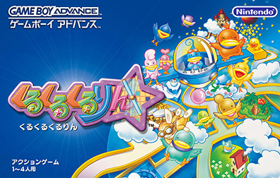
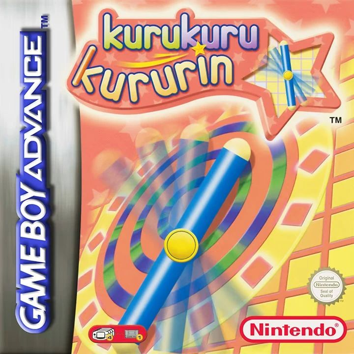
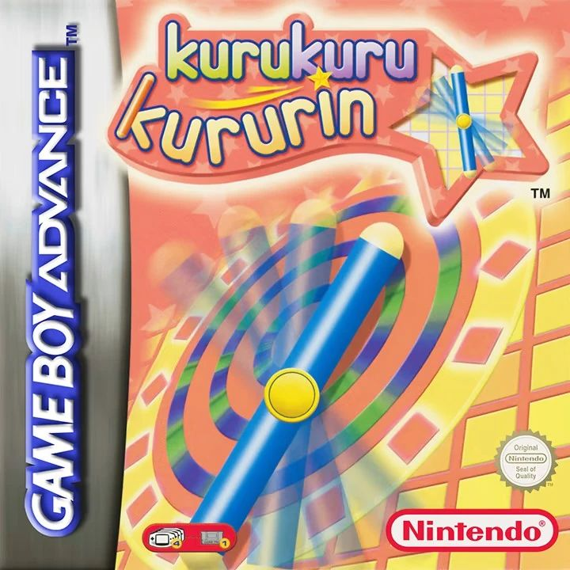
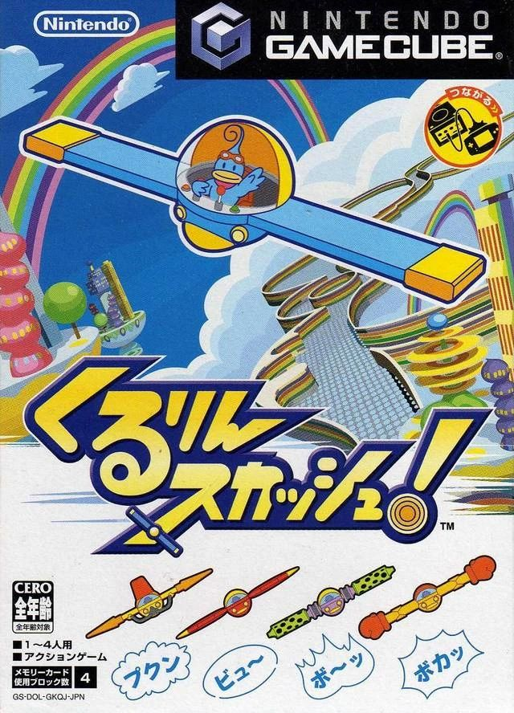

-About the series-
The Kururin series is an action-puzzle game developed by Eighting and published by Nintendo for the Game Boy Advance and Nintendo GameCube. The idea originally came from trying to move around when lifting up long furniture, which requires rotation and precise movement. In the games, you play as a blue bird named Kururin, who is the pilot of a helicopter-like vehicle (sometimes referred to as a stick) called the Helirin. Kururin must pilot the Helirin around obstacles and reach the goal.
While the gameplay is mostly simple, with the third entry adding in some attack actions, the games are also known for being very difficult. A few players even regard them as some of the hardest games on the Game Boy Advance and Nintendo GameCube.
Kuru Kuru Kururin (2001, Game Boy Advance)Released on March 21st, 2001 (Japan), and June 22nd, 2001 (Europe & Australia) Kururin's siblings and his mother, Kakarin, were walking around one day. Suddenly, the siblings got distracted and wondered off into different lands. Kakarin notices this, and rushes to Kururin. Kururin sets off with the Helirin, but not without optional training from Teacher Hare first. |
 Source |
 

Australia version boxart Source and EU version boxart Source
Kururin Paradise (2002, Game Boy Advance)Released on December 6th, 2002 (Japan only) One day, a travelling magic show arrived at Kururin Village! Kururin's family alongside Teacher Hare go to watch the show, but Kururin himself is late, after he overslept and dealt with his bedhead issue. To make matters worse, his family and mentor went missing once he arrived, starting Kururin's adventure. While the game is fairly similar to Kuru Kuru Kururin, being the direct sequel to it, it also has new features, such as minigames at the end of each area, branching paths, and magic tricks. |
 Source
Source
|
Kururin Squash! (2004, Nintendo GameCube)Released on October 14th, 2004 (Japan only) Kururin won the lottery while shopping with his family, and got the winning result of a world tour. He and his family travel through four different worlds, but his siblings slowly disappear (how did they not realize that while traveling?!). All of the siblings went missing by the time Kururin and his parents got home, thus starting his adventure. This game features different types of Helirins known as Action Helirins (each with their own gameplay style), and also includes boss battles alongside item shops. |
 Source |